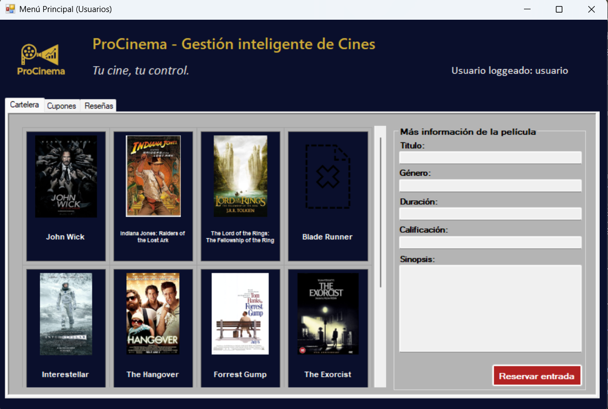

Pablo Muiño Rodríguez
Aplicación de escritorio realizada en C# como proyecto final del grado DAM.

2024
Ver en GitHubAplicación de escritorio la cual simula la gestión e interacción de cine, tanto para los administradores como para los usuarios. Realizada en C# con Windows Forms utilizando datasets tipados vinculados a una base de datos construida en SQL Server Management Studio.\n\nCuenta con varias ventanas por las que nevegar, entre ellas: cartelera, reserva de asientos, canjeo de cupones, administración de los usuarios, administración de los permisos, etc.